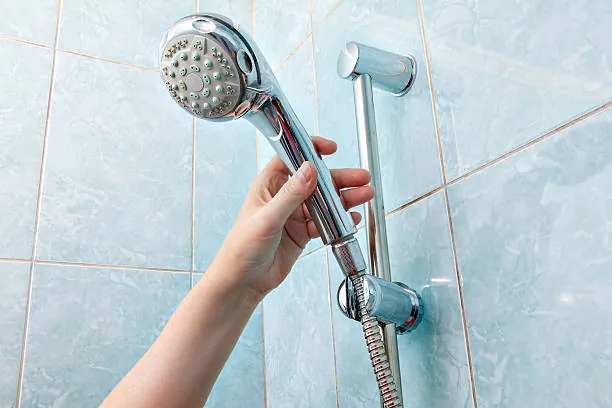
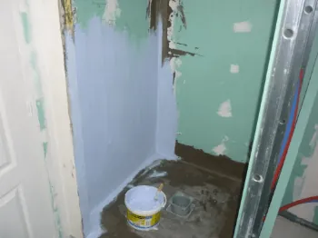

SPEC, SEL sont des termes bien connus par les Professionnels, mais quelles sont les différences ?
Définitions
Commençons par les définitions :
- SPEC = Système de Protection à l'Eau sous Carrelage,
- SEL = Système d'Étanchéité Liquide.
Dans les deux cas, il s'agit de systèmes utilisés dans les pièces humides comme la salle de bain, au niveau de la douche mais aussi de la baignoire.
La présence d'eau n'est pas à prendre à la légère : elle est souvent la cause de dommages non-négligeables. Pire encore, ceux-ci apparaissent dans le temps et il est compliqué de s'assurer de l'étanchéité d'un ouvrage lors de sa réalisation.
Pour rappel, il ne suffit pas d'utiliser des plaques de plâtre hydrofuges pour assurer l'étanchéité !
Nous n'allons pas faire durer le suspense plus longtemps :
- SPEC : Pour les parois
- SEL : Pour le sol
SPEC : Système de Protection à l'Eau sous Carrelage
Le SPEC peut être sous forme liquide, formant une membrane de protection au séchage, ou solide (nattes, films...).
Quoi qu'il en soit, il est important de combattre une idée reçue : le SPEC ne permet pas d'assurer l'étanchéité de l'ouvrage.
Cependant, il permet de protéger le support et de le rendre admissible à la pose de carrelage collé !
Niveau assurance, les entreprises de carrelage, qualifiées 6312 et 6313, peuvent donc être couvertes pour la réalisation des SPEC.
Cette protection est appliquée sur les supports verticaux dans les locaux humides classés EB+ (privatif et collectif) et EC.
Pour le sol, l'application d'un système de protection à l'eau sous carrelage est restreinte à certains types de locaux qui ne présentent pas de dispositifs d'évacuation d'eau et aux salles de bains sur support bois.

SEL : Système d'Étanchéité Liquide
Le SEL existe uniquement sous forme liquide. Plus globalement, il s'agit ici de garantir l'étanchéité des planchers intermédiaires dans les locaux humides. Les formes de pentes sont préservées car le SEL les épouse parfaitement.
Cette protection est appliquée sur les supports horizontaux (sol) dans les locaux humides classés EB+ (privatif et collectif) et EC.
La mise en oeuvre d'un SEL constitue des travaux d'étanchéité et les entreprises de carrelage ne sont pas forcément assurées de base pour la réalisation de ce type d'ouvrage.
Le cas échéant, il convient donc d'être extrêmement vigilant et de demander un avenant pour être couvert lors de la réalisation de SEL.
S'agissant d'une véritable étanchéité, il est important de respecter 28 jours de séchage du support si celui-ci est une dalle en béton fraîchement coulée.
Par ailleurs, pour éviter que l'eau coule et impacte le carrelage situé contre la douche, il peut être judicieux de prolonger le SEL devant la douche.
Étanchéité sur carrelage existant
Le cahier 3529 du CSTB précise les conditions d'utilisation d'un SEL sur support existant : celui-ci peut être appliqué sur un carrelage existant dans les locaux classés P3 au plus.
Les locaux P2 et P3 sont définis comme suit :
P2 : locaux où il n'y a pas d'action prévisible très intense ; en particulier, pas de roulage sauf occasionnellement d'objets légers (locaux d'habitation).
P3 : locaux équipés de sièges à roulettes (tels que les bureaux) ou locaux où circulent de façon courante des chariots déplacés à la main à l'exclusion des transpalettes, par exemple, certains couloirs d'hôpitaux) ainsi que les locaux soumis à des efforts d'intensité comparable ; l'entretien se limite à l'emploi au plus de la monobrosse.
Pour faire simple, l'application d'un SEL sur un support existant peut être se faire dans un logement ou des bureaux, notamment pour des travaux de rénovation à coût maitrisé !
Néanmoins, l'application d'un SEL sur un carrelage existant se fait sous réserve de travaux préparatoires : examens visuels et sonores (sondage avec objet métallique), traitement des zones avec défauts, décapage/ponçage selon la nature du support existant.
Il ne faut pas oublier que lors d'une pose sur du carrelage existant, le "spectre" des anciens carreaux sera toujours visible... à prendre en compte.
Conclusion
SPEC et SEL présentent de grandes similitudes mais leur mise en oeuvre ne se fait pas sur les mêmes supports et ils n'assurent pas exactement les mêmes fonctions. Il convient donc d'être vigilant sur la couverture des assurances !